Subsections
The distance {...} block defines a distance component,
between two atom groups, group1 and group2.
-
group1
 First group of atoms
First group of atoms
Context: distance
Acceptable values: Block group1 {...}
Description: First group of atoms.
-
group2 Second group of atoms
Context: distance
Acceptable values: Block group2 {...}
Description: Second group of atoms.
-
forceNoPBC Calculate absolute rather than minimum-image distance?
Context: distance
Acceptable values: boolean
Default value: no
Description: By default, in calculations with periodic boundary conditions, the
distance component returns the distance according to the
minimum-image convention. If this parameter is set to yes,
PBC will be ignored and the distance between the coordinates as maintained
internally will be used. This is only useful in a limited number of
special cases, e.g. to describe the distance between remote points
of a single macromolecule, which cannot be split across periodic cell
boundaries, and for which the minimum-image distance might give the
wrong result because of a relatively small periodic cell.
-
oneSiteSystemForce Measure system force on group 1 only?
Context: distance
Acceptable values: boolean
Default value: no
Description: If this is set to yes, the system force is measured along
a vector field (see equation (19) in
section 6.1) that only involves atoms of
group1. This option is only useful for ABF, or custom
biases that compute system forces. See
section 6.1 for details.
The value returned is a positive number (in Å), ranging from 0
to the largest possible interatomic distance within the chosen
boundary conditions (with PBCs, the minimum image convention is used
unless the forceNoPBC option is set).
The distanceZ {...} block defines a distance projection
component, which can be seen as measuring the distance between two
groups projected onto an axis, or the position of a group along such
an axis. The axis can be defined using either one reference group and
a constant vector, or dynamically based on two reference groups.
-
main Main group of atoms
Context: distanceZ, distanceXY
Acceptable values: Block main {...}
Description: Group of atoms whose position
 is measured.
is measured.
-
ref Reference group of
atoms
Context: distanceZ, distanceXY
Acceptable values: Block ref {...}
Description: Reference group of atoms. The position of its center of mass is
noted
 below.
below.
-
ref2 Secondary reference
group
Context: distanceZ, distanceXY
Acceptable values: Block ref2 {...}
Default value: none
Description: Optional group of reference atoms, whose position
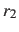 can
be used to define a dynamic projection axis:
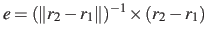. In this case,
the origin is
 , and the value
of the component is
, and the value
of the component is
 .
.
-
axis Projection axis (Å)
Context: distanceZ, distanceXY
Acceptable values: (x, y, z) triplet
Default value: (0.0, 0.0, 1.0)
Description: The three components of this vector define (when normalized) a
projection axis
for the distance vector
 joining the centers of groups ref and
main. The value of the component is then
joining the centers of groups ref and
main. The value of the component is then
 . The vector should be written as three
components separated by commas and enclosed in parentheses.
. The vector should be written as three
components separated by commas and enclosed in parentheses.
-
forceNoPBC Calculate absolute rather than minimum-image distance?
Context: distanceZ, distanceXY
Acceptable values: boolean
Default value: no
Description: This parameter has the same meaning as that described above for the distance
component.
-
oneSiteSystemForce Measure system force on group main only?
Context: distanceZ, distanceXY
Acceptable values: boolean
Default value: no
Description: If this is set to yes, the system force is measured along a
vector field (see equation (19) in
section 6.1) that only involves atoms of main.
This option is only useful for ABF, or custom biases that compute
system forces. See section 6.1 for details.
This component returns a number (in Å) whose range is determined
by the chosen boundary conditions. For instance, if the  axis is
used in a simulation with periodic boundaries, the returned value ranges
between
axis is
used in a simulation with periodic boundaries, the returned value ranges
between  and
and  , where 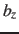 is the box length
along (this behavior is disabled if forceNoPBC is set).
, where 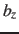 is the box length
along (this behavior is disabled if forceNoPBC is set).
The distanceXY {...} block defines a distance projected on
a plane, and accepts the same keywords as the component distanceZ, i.e.
main, ref, either ref2 or axis,
and oneSiteSystemForce. It returns the norm of the
projection of the distance vector between main and
ref onto the plane orthogonal to the axis. The axis is
defined using the axis parameter or as the vector joining
ref and ref2 (see distanceZ above).
The distanceVec {...} block defines
a distance vector component, which accepts the same keywords as
the component distance: group1, group2, and
forceNoPBC. Its value is the 3-vector joining the centers
of mass of group1 and group2.
The distanceDir {...} block defines
a distance unit vector component, which accepts the same keywords as
the component distance: group1, group2, and
forceNoPBC. It returns a
3-dimensional unit vector
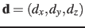, with
 .
.
The distanceInv {...} block defines a generalized mean distance between two groups of atoms 1 and 2, weighted with exponent 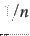:
![$\displaystyle d_{\mathrm{1,2}}^{[n]} \; = \; \left(\frac{1}{N_{\mathrm{1}}N_{\m...
...}\sum_{i,j} \left(\frac{1}{\Vert\mathbf{d}^{ij}\Vert}\right)^{n} \right)^{-1/n}$](img64.png) |
(2) |
where
 is the distance between atoms
is the distance between atoms  and
and  in groups 1 and 2 respectively, and
in groups 1 and 2 respectively, and  is an even integer.
This component accepts the same keywords as the component distance: group1, group2, and forceNoPBC. In addition, the following option may be provided:
is an even integer.
This component accepts the same keywords as the component distance: group1, group2, and forceNoPBC. In addition, the following option may be provided:
-
exponent Exponent in equation 2
Context: distanceInv
Acceptable values: positive even integer
Default value: 6
Description: Defines the exponent to which the individual distances are elevated before averaging. The default value of 6 is useful for example to applying restraints based on NOE-measured distances.
This component returns a number in Å, ranging from 0 to the largest possible distance within the chosen boundary conditions.
The cartesian {...} block defines a component returning a flat vector containing
the Cartesian coordinates of all participating atoms, in the order
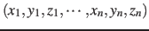.
This component accepts the following keyword:
-
atoms Group of atoms
Context: cartesian
Acceptable values: Block atoms {...}
Description: Defines the atoms whose coordinates make up the value of the component.
If rotateReference or centerReference are defined, coordinates
are evaluated within the moving frame of reference.
The angle {...} block defines an angle, and contains the
three blocks group1, group2 and group3, defining
the three groups. It returns an angle (in degrees) within the
interval 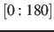.
The dihedral {...} block defines a torsional angle, and
contains the blocks group1, group2, group3
and group4, defining the four groups. It returns an angle
(in degrees) within the interval
![$ [-180:180]$](img70.png) . The colvar module
calculates all the distances between two angles taking into account
periodicity. For instance, reference values for restraints or range
boundaries can be defined by using any real number of choice.
. The colvar module
calculates all the distances between two angles taking into account
periodicity. For instance, reference values for restraints or range
boundaries can be defined by using any real number of choice.
-
oneSiteSystemForce Measure system force on group 1 only?
Context: angle, dihedral
Acceptable values: boolean
Default value: no
Description: If this is set to yes, the system force is measured along
a vector field (see equation (19) in
section 6.1) that only involves atoms of
group1. See section 6.1 for an
example.
The coordNum {...} block defines
a coordination number (or number of contacts), which calculates the
function
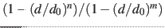, where  is the
``cutoff'' distance, and and
is the
``cutoff'' distance, and and  are exponents that can control
its long range behavior and stiffness [2]. This
function is summed over all pairs of atoms in group1 and
group2:
are exponents that can control
its long range behavior and stiffness [2]. This
function is summed over all pairs of atoms in group1 and
group2:
This colvar component accepts the same keywords as the component distance,
group1 and group2. In addition to them, it
recognizes the following keywords:
-
cutoff ``Interaction'' distance (Å)
Context: coordNum
Acceptable values: positive decimal
Default value: 4.0
Description: This number defines the switching distance to define an
interatomic contact: for  , the switching function
is close to 1, at
, the switching function
is close to 1, at  it
has a value of
it
has a value of  (
( with the default and ), and at
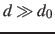 it goes to zero approximately like 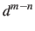. Hence,
for a proper behavior, must be larger than .
with the default and ), and at
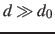 it goes to zero approximately like 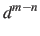. Hence,
for a proper behavior, must be larger than .
-
cutoff3 Reference distance vector (Å)
Context: coordNum
Acceptable values: ``(x, y, z)'' triplet of positive decimals
Default value: (4.0, 4.0, 4.0)
Description: The three components of this vector define three different cutoffs
 for each direction. This option is mutually exclusive with
cutoff.
for each direction. This option is mutually exclusive with
cutoff.
-
expNumer Numerator exponent
Context: coordNum
Acceptable values: positive even integer
Default value: 6
Description: This number defines the exponent for the switching function.
-
expDenom Denominator exponent
Context: coordNum
Acceptable values: positive even integer
Default value: 12
Description: This number defines the exponent for the switching function.
-
group2CenterOnly Use only group2's center of
mass
Context: coordNum
Acceptable values: boolean
Default value: off
Description: If this option is on, only contacts between each atoms in group1 and the center of mass of group2 are calculated (by default, the sum extends over all pairs of atoms in group1 and group2).
If group2 is a dummyAtom, this option is set to yes by default.
This component returns a dimensionless number, which ranges from
approximately 0 (all interatomic distances are much larger than the
cutoff) to
 (all distances
are less than the cutoff), or
(all distances
are less than the cutoff), or
 if
group2CenterOnly is used. For performance reasons, at least
one of group1 and group2 should be of limited size or group2CenterOnly should be used: the cost of the loop over all pairs grows as
.
if
group2CenterOnly is used. For performance reasons, at least
one of group1 and group2 should be of limited size or group2CenterOnly should be used: the cost of the loop over all pairs grows as
.
The selfCoordNum {...} block defines
a coordination number similarly to the component coordNum,
but the function is summed over atom pairs within group1:
The keywords accepted by selfCoordNum are a subset of
those accepted by coordNum, namely group1
(here defining all of the atoms to be considered),
cutoff, expNumer, and expDenom.
This component returns a dimensionless number, which ranges from
approximately 0 (all interatomic distances much larger than the
cutoff) to
 (all
distances within the cutoff). For performance reasons,
group1 should be of limited size, because the cost of the
loop over all pairs grows as
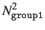.
(all
distances within the cutoff). For performance reasons,
group1 should be of limited size, because the cost of the
loop over all pairs grows as
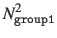.
The hBond {...} block defines a hydrogen
bond, implemented as a coordination number (eq. 3)
between the donor and the acceptor atoms. Therefore, it accepts the
same options cutoff (with a different default value of
3.3 Å), expNumer (with a default value of 6) and
expDenom (with a default value of 8). Unlike
coordNum, it requires two atom numbers, acceptor and
donor, to be defined. It returns an adimensional number,
with values between 0 (acceptor and donor far outside the cutoff
distance) and 1 (acceptor and donor much closer than the cutoff).
The block rmsd {...} defines the root mean square replacement
(RMSD) of a group of atoms with respect to a reference structure. For
each set of coordinates
 , the colvar component rmsd calculates the
optimal rotation
, the colvar component rmsd calculates the
optimal rotation
 that best superimposes the coordinates
that best superimposes the coordinates
 onto a
set of reference coordinates
onto a
set of reference coordinates
 .
Both the current and the reference coordinates are centered on their
centers of geometry,
.
Both the current and the reference coordinates are centered on their
centers of geometry,
 and
and
 . The root mean square
displacement is then defined as:
. The root mean square
displacement is then defined as:
The optimal rotation
is calculated within the formalism developed in
reference [3], which guarantees a continuous
dependence of
with respect to
. The options for rmsd
are:
-
atoms Atom group
Context: rmsd
Acceptable values: atoms {...} block
Description: Defines the group of atoms of which the RMSD should be calculated.
Optimal fit options (such as refPositions and
rotateReference) should typically NOT be set within this
block. Exceptions to this rule are the special cases discussed in
the Advanced usage paragraph below.
-
refPositions Reference coordinates
Context: rmsd
Acceptable values: space-separated list of (x, y, z) triplets
Description: This option (mutually exclusive with refPositionsFile)
sets the reference coordinates. If only centerReference is on, the list can be a single (x, y, z) triplet; if also rotateReference is on, the list should be as long as the atom group. This option
is independent from that with the same keyword within the
atoms {...} block (see 4). The latter (and related fitting
options for the atom group) are normally not needed,
and should be omitted altogether except for advanced usage cases.
-
refPositionsFile Reference coordinates file
Context: rmsd
Acceptable values: UNIX filename
Description: This option (mutually exclusive with refPositions) sets
the PDB file name for the reference coordinates to be compared
with. The format is the same as that provided by
refPositionsFile within an atom group definition.
-
refPositionsCol PDB column containing atom flags
Context: rmsd
Acceptable values: O, B, X, Y, or Z
Description: If refPositionsFile is defined, and the file contains
all the atoms in the topology, this option may be povided to
set which PDB field is
used to flag the reference coordinates for atoms.
-
refPositionsColValue Atom selection flag in the PDB column
Context: rmsd
Acceptable values: positive decimal
Description: If defined, this value identifies in the PDB column
refPositionsCol of the file refPositionsFile
which atom positions are to be read. Otherwise, all positions
with a non-zero value are read.
This component returns a positive real number (in Å).
In the standard usage as described above, the rmsd component
calculates a minimum RMSD, that is, current coordinates are optimally
fitted onto the same reference coordinates that are used to
compute the RMSD value. The fit itself is handled by the atom group
object, whose parameters are automatically set by the rmsd
component.
For very specific applications, however, it may be
useful to control the fitting process separately from the definition
of the reference coordinates, to evaluate various types of
non-minimal RMSD values. This can be achieved by setting the
related options (refPositions, etc.) explicitly in the
atom group block. This allows for the following non-standard cases:
- applying the optimal translation, but no rotation
(rotateReference off), to bias or restrain the shape and
orientation, but not the position of the atom group;
- applying the optimal rotation, but no translation
(translateReference off), to bias or restrain the shape and
position, but not the orientation of the atom group;
- disabling the application of optimal roto-translations, which
lets the RMSD component decribe the deviation of atoms
from fixed positions in the laboratory frame: this allows for custom
positional restraints within the colvars module;
- fitting the atomic positions to different reference coordinates
than those used in the RMSD calculation itself;
- applying the optimal rotation and/or translation from a separate
atom group, defined through refPositionsGroup: the RMSD then
reflects the deviation from reference coordinates in a separate, moving
reference frame.
The block eigenvector {...} defines the projection of the coordinates
of a group of atoms (or more precisely, their deviations from the
reference coordinates) onto a vector in
 , where is the
number of atoms in the group. The computed quantity is the
total projection:
, where is the
number of atoms in the group. The computed quantity is the
total projection:
where, as in the rmsd component, is the optimal rotation
matrix,
and
are the centers of
geometry of the current and reference positions respectively, and
 are the components of the vector for each atom.
Example choices for
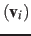 are an eigenvector
of the covariance matrix (essential mode), or a normal
mode of the system. It is assumed that
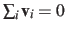:
otherwise, the colvars module centers the
automatically when reading them from the configuration.
are the components of the vector for each atom.
Example choices for
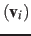 are an eigenvector
of the covariance matrix (essential mode), or a normal
mode of the system. It is assumed that
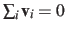:
otherwise, the colvars module centers the
automatically when reading them from the configuration.
As for the component rmsd, the available options are atoms, refPositionsFile, refPositionsCol and refPositionsColValue, and refPositions.
In addition, the following are recognized:
-
vector Vector components
Context: eigenvector
Acceptable values: space-separated list of (x, y, z) triplets
Description: This option (mutually exclusive with vectorFile) sets the values of the vector components.
-
vectorFile PDB file containing vector components
Context: eigenvector
Acceptable values: UNIX filename
Description: This option (mutually exclusive with vector) sets the
name of a PDB file where the vector components will be read from the
X, Y, and Z fields.
Note: The PDB file has limited precision and fixed
point numbers: in some cases, the vector may not be
accurately represented, and vector should be
used instead.
-
vectorCol PDB column used to flag participating atoms
Context: eigenvector
Acceptable values: O or B
Description: Analogous to atomsCol.
-
vectorColValue Value used to flag participating atoms in the PDB file
Context: eigenvector
Acceptable values: positive decimal
Description: Analogous to atomsColValue.
-
differenceVector The
 -dimensional vector is the difference between vector and refPositions
-dimensional vector is the difference between vector and refPositions
Context: eigenvector
Acceptable values: boolean
Default value: off
Description: If this option is on, the numbers provided by vector or vectorFile are interpreted as another set of positions,
 : the vector
is then defined as
: the vector
is then defined as
 .
This allows to conveniently define a colvar
.
This allows to conveniently define a colvar  as a projection on the linear transformation between two sets of positions, ``A'' and ``B''.
For convenience, the vector is also normalized so that 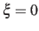 when the atoms are at the set of positions ``A'' and
as a projection on the linear transformation between two sets of positions, ``A'' and ``B''.
For convenience, the vector is also normalized so that 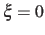 when the atoms are at the set of positions ``A'' and  at the set of positions ``B''.
at the set of positions ``B''.
This component returns a number (in Å), whose value ranges between
the smallest and largest absolute positions in the unit cell during
the simulations (see also distanceZ). Due to the
normalization in eq. 6, this range does not
depend on the number of atoms involved.
The block gyration {...} defines the
parameters for calculating the radius of gyration of a group of atomic
positions
with respect to their center of geometry,
:
 |
(7) |
This component must contain one atoms {...} block to
define the atom group, and returns a positive number, expressed in
Å.
The block inertia {...} defines the
parameters for calculating the total moment of inertia of a group of atomic
positions
with respect to their center of geometry,
:
 |
(8) |
Note that all atomic masses are set to 1 for simplicity.
This component must contain one atoms {...} block to
define the atom group, and returns a positive number, expressed in
Å .
.
The block inertiaZ {...} defines the
parameters for calculating the component along the axis
 of the moment of inertia of a group of atomic
positions
with respect to their center of geometry,
:
of the moment of inertia of a group of atomic
positions
with respect to their center of geometry,
:
 |
(9) |
Note that all atomic masses are set to 1 for simplicity.
This component must contain one atoms {...} block to
define the atom group, and returns a positive number, expressed in
Å. The following option may also be provided:
-
axis Projection axis (Å)
Context: inertiaZ
Acceptable values: (x, y, z) triplet
Default value: (0.0, 0.0, 1.0)
Description: The three components of this vector define (when normalized) the
projection axis
.
The block orientation {...} returns the
same optimal rotation used in the rmsd component to
superimpose the coordinates
onto a set of
reference coordinates
. Such
component returns a four dimensional vector
 , with
, with
 ; this quaternion
expresses the optimal rotation
; this quaternion
expresses the optimal rotation
 according to the formalism in
reference [3]. The quaternion
according to the formalism in
reference [3]. The quaternion
 can also be written as
can also be written as
 , where
, where  is the angle and
is the angle and
 the normalized axis of rotation; for example, a rotation
of 90
the normalized axis of rotation; for example, a rotation
of 90 around the axis is expressed as
``(0.707, 0.0, 0.0, 0.707)''. The script
quaternion2rmatrix.tcl provides Tcl functions for converting
to and from a
around the axis is expressed as
``(0.707, 0.0, 0.0, 0.707)''. The script
quaternion2rmatrix.tcl provides Tcl functions for converting
to and from a
 rotation matrix in a format suitable for
usage in VMD.
rotation matrix in a format suitable for
usage in VMD.
As for the component rmsd, the available options are atoms, refPositionsFile, refPositionsCol and refPositionsColValue, and refPositions.
Note: refPositions and refPositionsFile define the set of positions from which the optimal rotation is calculated, but this rotation is not applied to the coordinates of the atoms involved: it is used instead to define the variable itself.
-
closestToQuaternion Reference rotation
Context: orientation
Acceptable values: ``(q0, q1, q2, q3)'' quadruplet
Default value: (1.0, 0.0, 0.0, 0.0) (``null'' rotation)
Description: Between the two equivalent quaternions
and
 , the closer to (1.0, 0.0, 0.0,
0.0) is chosen. This simplifies the visualization of the
colvar trajectory when samples values are a smaller subset of all
possible rotations. Note: this only affects the
output, never the dynamics.
, the closer to (1.0, 0.0, 0.0,
0.0) is chosen. This simplifies the visualization of the
colvar trajectory when samples values are a smaller subset of all
possible rotations. Note: this only affects the
output, never the dynamics.
Hint: stopping the rotation of a protein. To stop the
rotation of an elongated macromolecule in solution (and use an
anisotropic box to save water molecules), it is possible to define a
colvar with an orientation component, and restrain it throuh
the harmonic bias around the identity rotation, (1.0,
0.0, 0.0, 0.0). Only the overall orientation of the macromolecule
is affected, and not its internal degrees of freedom. The user
should also take care that the macromolecule is composed by a single
chain, or disable wrapAll otherwise.
The block orientationAngle {...} accepts the same base options as
the component orientation: atoms and refPositions, or refPositionsFile, refPositionsCol and refPositionsColValue.
The returned value is the angle of rotation between the current and the reference positions.
This angle is expressed in degrees within the range [0:180].
The block orientationProj {...} accepts the same base options as
the component orientation: atoms and refPositions, or refPositionsFile, refPositionsCol and refPositionsColValue.
The returned value is the cosine of the angle of rotation between the current and the reference positions.
The range of values is [-1:1].
The complete rotation described by orientation can optionally be decomposed into two sub-rotations: one is a ``spin'' rotation around e, and the other a ``tilt'' rotation around an axis orthogonal to e.
The component spinAngle measures the angle of the ``spin'' sub-rotation around e.
This can be defined using the same options as the component orientation: atoms and refPositions, or refPositionsFile, refPositionsCol and refPositionsColValue.
In addition, spinAngle accepts the axis option:
-
axis Special rotation axis (Å)
Context: tilt, spinAngle
Acceptable values: (x, y, z) triplet
Default value: (0.0, 0.0, 1.0)
Description: The three components of this vector define (when normalized) the special rotation axis used to calculate the tilt and spinAngle components.
The component spinAngle returns an angle (in degrees) within the periodic interval
.
Note: the value of spinAngle is a continuous function almost everywhere, with the exception of configurations with the corresponding ``tilt'' angle equal to 180 (i.e. the tilt component is equal to 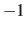): in those cases, spinAngle is undefined. If such configurations are expected, consider defining a tilt colvar using the same axis e, and restraining it with a lower wall away from .
(i.e. the tilt component is equal to 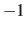): in those cases, spinAngle is undefined. If such configurations are expected, consider defining a tilt colvar using the same axis e, and restraining it with a lower wall away from .
The component tilt measures the cosine of the angle of the ``tilt'' sub-rotation, which combined with the ``spin'' sub-rotation provides the complete rotation of a group of atoms.
The cosine of the tilt angle rather than the tilt angle itself is implemented, because the latter is unevenly distributed even for an isotropic system: consider as an analogy the angle in the spherical coordinate system.
The component tilt relies on the same options as spinAngle, including the definition of the axis e.
The values of tilt are real numbers in the interval : the value  represents an orientation fully parallel to e (tilt angle = 0), and the value represents an anti-parallel orientation.
represents an orientation fully parallel to e (tilt angle = 0), and the value represents an anti-parallel orientation.
The block alpha {...} defines the
parameters to calculate the helical content of a segment of protein
residues. The  -helical content across the
-helical content across the  residues
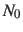 to
residues
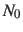 to  is calculated by the formula:
is calculated by the formula:
 |
|
|
(10) |
| 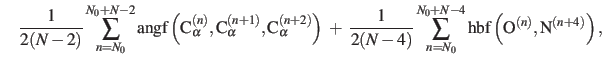 |
|
|
|
where the score function for the
 angle is defined as:
angle is defined as:
and the score function for the
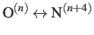 hydrogen bond is defined through a hBond
colvar component on the same atoms. The options recognized within the
alpha {...} block are:
This component returns positive values, always comprised between 0
(lowest -helical score) and 1 (highest -helical
score).
The block dihedralPC {...} defines the
parameters to calculate the projection of backbone dihedral angles within
a protein segment onto a dihedral principal component, following
the formalism of dihedral principal component analysis (dPCA) proposed by
Mu et al.[4] and documented in detail by Altis et
al.[5].
Given a peptide or protein segment of  residues, each with Ramachandran
angles
residues, each with Ramachandran
angles  and
and  , dPCA rests on a variance/covariance analysis
of the
, dPCA rests on a variance/covariance analysis
of the  variables
variables
 . Note that angles
. Note that angles  and
and  have little impact on chain conformation, and are therefore discarded,
following the implementation of dPCA in the analysis software Carma.[6]
have little impact on chain conformation, and are therefore discarded,
following the implementation of dPCA in the analysis software Carma.[6]
For a given principal component (eigenvector) of coefficients
 ,
the projection of the current backbone conformation is:
,
the projection of the current backbone conformation is:
 |
(12) |
dihedralPC expects the same parameters as the alpha
component for defining the relevant residues (residueRange
and psfSegID) in addition to the following:
Jérôme Hénin
2015-03-03